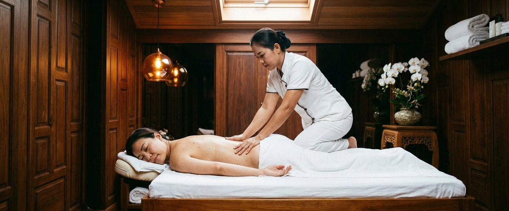
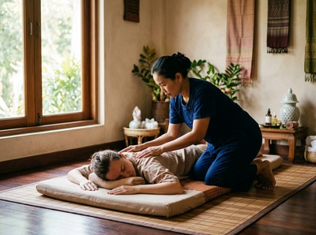

If you've ever left a massage table wondering why your back still feels stiff, or why you drifted off halfway through but woke up tighter than before, traditional Thai massage is worth understanding properly.

It works differently from every other treatment on the menu, and once you know why, it makes a lot of sense.
Traditional Thai massage — sometimes called Thai yoga massage — is a fully clothed treatment. It combines acupressure along the body's energy lines, assisted stretching, and guided movement. There are no oils, no long gliding strokes, and no lying still for an hour.
A trained therapist uses their hands, thumbs, elbows, and sometimes feet to apply targeted pressure. They also move your body through a series of stretches that resemble yoga postures. The result is closer to assisted movement therapy than standard massage. That's precisely why it produces results that other treatments don't.

The framework behind traditional Thai massage centres on sen lines. These are energy pathways that run throughout the body. Therapists work along these lines using rhythmic acupressure. The aim is to release tension and restore balance to muscles and connective tissue.
Whether you engage with the energy theory or not, the practical effect is clear. Tight, compressed areas receive sustained, focused attention. Swedish or oil massage rarely achieves the same. For people carrying chronic tension in the hips, lower back, or shoulders, that sustained pressure combined with assisted stretching is often what finally brings relief.
Research shows that traditional Thai massage improves flexibility and range of motion. A review in Complementary Therapies in Clinical Practice found it increased flexibility and reduced muscle tension in people with chronic pain.
For desk workers in Glasgow — whose hips tighten and upper backs round after years of sitting — this isn't a minor detail. It's the whole point. A session at Serendipity doesn't just address the symptom you came in with. It works the surrounding muscle groups that are driving it.
Book your session today and find out what your body has been missing.
Traditional Thai massage is also deeply calming — which surprises some people who expect it to feel more like physio than relaxation. The rhythmic compression and sustained pressure applied during a session have been shown to reduce anxiety. They also promote a calmer nervous system state. That's when your body stops bracing and starts recovering.
Research noted by Medical News Today found that the yoga-like stretches in Thai massage may improve circulation while reducing stress at the same time. At Serendipity, therapists are trained to read the pressure and pace that each client's body responds to. Sessions are calibrated, not scripted.
Traditional Thai massage is performed in loose, comfortable clothing. This matters more than it might seem. It removes the sense of exposure that some people feel with oil-based treatments. That makes it a natural choice for first-time clients or anyone who has been put off by massage before.
It also allows the treatment to be more active. With no oil involved, the therapist can apply leverage and assist stretches through a fuller range of motion. At Serendipity, clothing stays on, the session is active and purposeful, and the techniques draw from the training developed by head therapist Jariya Malone.
It's worth noting that this isn't a modern wellness trend dressed up in ancient branding.